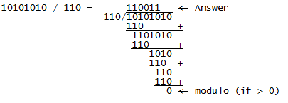

Diese Demonstration veranschaulicht die grundlegenden Operationen auf elliptischen Kurven in der Kryptografie. Nach der Auswahl des Kurventyps können mit den Punkten der Kurve Berechnungen durchgeführt werden.
Die erste Auswahl ist die Kurvengröße: klein oder groß.
a) Für eine pädagogische Visualisierung wählen Sie am besten klein. Hier wird ein Koordinatensystem angezeigt, in dem man die Punkte der Kurve mit der Maus auswählen kann. Dabei können Sie zwischen drei Arten von elliptischen Kurven wählen:

b) Die Kurvengröße groß bietet Standard-Kurven (jede in verschiedenen Varianten) zur Auswahl an: ANSI X9.62, SEC 2, ECC Brainpool und CDC Group für den diskreten Kurventyp F(p); und ANSI X9.62 für den diskreten Kurventyp F(2^m). Solche großen elliptischen Kurven kommen in professionellen kryptographischen Anwendungen zum Einsatz. Wie im Fall der kleinen Größen können Sie Punkte addieren und Punkte mit einem Skalar multiplizieren.
Die Ergebnisse der Berechnungen (egal ob für große oder kleine Größe) können gespeichert werden und entweder im JCT-Editor angesehen oder in eine Datei abgelegt werden.
Die folgenden Absätze zeigen konkrete Beispiele für die drei Typen elliptischer Kurven.
Elliptische Kurven in der Ebene von reellen Zahlen entsprechen der Gleichung y^2 = x^3 + a*x + b, wobei die Variablen a, b, x und y reelle Zahlen sind.
Auf der reellen Zahlenebene gibt es unendlich viele Punkte (x,y) auf der Kurve. Für jeden Punkt auf der Kurve gibt es einen negativen Wert, so das y = -y mit der Ausnahme y = 0.
Zwei Punkte auf der Kurve können einfach addiert werden. R ist das Ergebnis dieser Addition:
 |
| y² = x³ - 10x + 15 |
Zahlenbeispiel mit der Kurve aus dem obigen Screenshot:
Gewählte Kurve: y^2 = x^3 - 10,0x + 15,0
mit P = (-3,55 / 2,43) und Q = (0,59 / 3,05)
Addition: R = P+Q = (2,98 / -3,41)
Multiplikation: R = 2P = (39,70 / -249,36)
a) Wenn P = -Q, ist R = O, das Fernelement (Punkt in der Unendlichkeit).
In diesem Fall durchschneidet die Linie, die durch P und Q führt, die Kurve nie ein drittes Mal.
b) Sonst (mit P != Q) ergibt sich R so:
s = (Yp - Yq) / (Xp - Xq)
Xr = s^2 - Xp - Xq
Yr = -Yp + s(Xp - Xr)
a) Wenn Yp = 0, dann ist R = O.
b) Sonst (bspw. mit k=2) ergibt sich R so:
2P = P + P = R
s = (3Xp^2 + a) / (2Yp)
Xr = s^2 - 2Xp
Yr = -Yp + s(Xp - Xr)
Eine Kurve über dem diskreten Körper F(p) kann durch die Gleichung (y^2) mod(p) = (x^3 + a*x + b) mod (p) beschrieben werden (a und b sind Parameter).
Die Punkte (x, y) sind Elemente von F(p) und p ist eine Primzahl. Die Anzahl von Punkten im Körper F(p) ist begrenzt auf p*p Punkte (endlicher Körper).
 |
| y² mod 29 = (x³ + 14x + 15) mod 29 |
Zahlenbeispiel für die diskrete Gruppe F(p) aus dem obigen Screenshot:
Gewählte Kurve: y^2 = x^3 + 14x + 15
mit p = 29, P = (18/3) und Q = (10/13)
Addition: R = P+Q = (8/28)
Multiplikation: R = 2P = (22/26)
Hier gibt es 36 Punkte: O, (1|1), (1|28), (2|14), (2|15), (5|6), (5|23), (6|5), (6|24), (8|1), (8|28), (9|0), (10|13), (10|16), (13|4), (13|25), (15|2), (15|27), (17|2), (17|27), (18|3), (18|26), (19|8), (19|21), (20|1), (20|28), (21|0), (22|3), (22|26), (23|11), (23|18), (24|9), (24|20), (26|2), (26|27), (28|0)
a) Wenn P = -Q, ist R = O, das Fernelement (Punkt in der Unendlichkeit).
b) Sonst (mit P != Q) ergibt sich R so:
s = ((Yp - Yq) / (Xp - Xq)) mod p
Xr = (s^2 - Xp - Xq) mod p
Yr = (-Yp + s(Xp - Xr)) mod p
a) Wenn Yp = 0, dann ist R = O.
b) Sonst (bspw. mit k=2) ergibt sich R so:
2P = P + P = R
s = ((3Xp^2 + a) / (2Yp)) mod p
Xr = (s^2 - 2Xp) mod p
Yr = (-Yp + s(Xp - Xr)) mod p
Elemente über dem Körper F(2^m) sind m-Bit Strings. Berechnungen erfolgen nach den Regeln der Polynom-Arithmetik.
Da F(2^m) Operationen auf Bitfolgen ausführt, können die Berechnungen von Computern effizient berechnet werden.
Die binäre Repräsentation einer elliptischen Kurve kann durch die Gleichung y^2 + xy = x^3 + ax^2 + b beschrieben werden.
Der Körper F(2^m) wird mithilfe des Generators G definiert. G ist ein irreduzibles primäres Polynom mit der Bitlänge m + 1.
Das Negative von Punkt P = (Xp, Yp) ist -P = (Xp, Xp + Yp).
 |  |
| y² + xy = x³ + g9*x² + g3 ; generator G = 110111 ; m = 5 |
Um Berechnungen über F(2^m) zu verstehen, muss man Berechnungen mit Polynomen verstehen.
In den folgenden Beispielen werden alle Polynome als Bitfolgen dargestellt (z.B. für m=5: x^4 + x^2 + x + 1 = 10111).
Addition (mithilfe XOR)
1011 + 0101 = 1110
Multiplikation
1011 * 1 = 1011
1011 * 10 = 10110
1011 * 11 = 10110 + 1011 = 11101
Division

a) Wenn P = -Q, ist R = O, das Fernelement (Punkt in der Unendlichkeit).
b) Sonst (mit P != Q) ergibt sich R so:
s = (Yp - Yq) / (Xp + Xq)
Xr = s^2 + s + Xp + Xq + a
Yr = s(Xp + Xr) + Xr + Yp
a) Wenn Xp = 0, dann ist R = O.
b) Sonst (bspw. mit k=2) ergibt sich R so:
2P = P + P = R
s = Xp + Yp / Xp
Xr = s^2 + s + a
Yr = Xp^2 + (s + 1) *Xr
Weitere Informationen über elliptische Kurven:
[HMV04]Hankerson, Darrel, Menezes, Alfred J., und Vanstone, Scott: Guide to Elliptic Curve Cryptography, Springer, 2004
[Wikipedia_EC]Elliptische_Kurve, https://de.wikipedia.org/wiki/Elliptische_Kurve
[Wikipedia_ECC]Elliptic Curve Cryptography, https://de.wikipedia.org/wiki/Elliptic_Curve_Cryptography